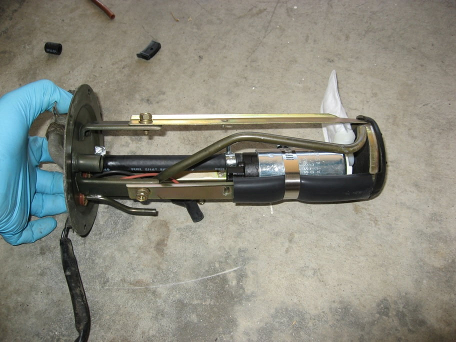
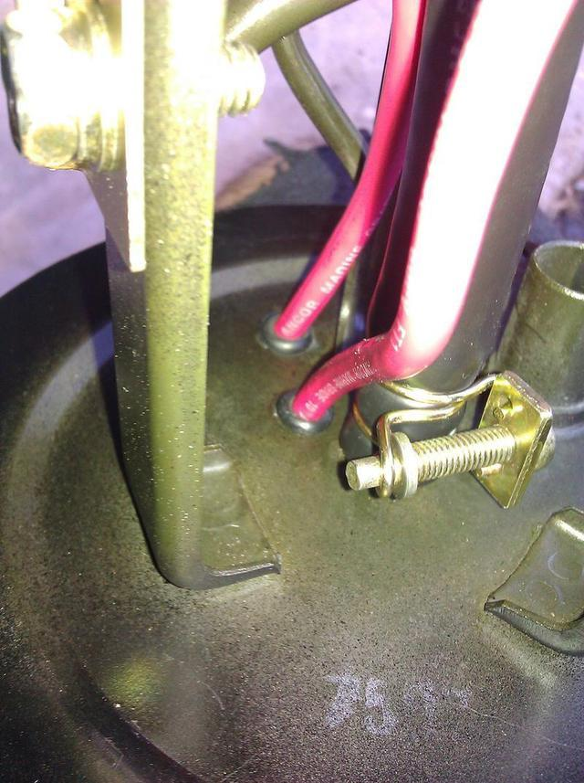

-
I recently dug up some photos for a coworker who's son is installing a Walbro 255lph unit into his 87 Z31.
I figured I'd put them up here as well as i couldn't remember if i did before.
I purchased the most recent Walbro from Ebay for 84.99 shipped.
I reused the stock filter/strainer, and rubber isolator. The pump is clamped in place
with stainless steel wire i procured from a Chinese food container. The other method i've read
about was to just zip-tie it to the original support bracket. This method did not appeal to me.
DSC07268sm.jpg
My setup has been working reliably for 14 or so years. The only problem i've had is the factory
electrical connector failing, probably due to the increased draw of current from the Walbro.
http://z31performance.com/forum/…=24029&start=0
If you do this, i highly recommend upgrading the wiring to support the new pump. This can be found
by using the search feature.
The pump, wire-clamped in place, inside the foam isolator and, fitted snug inside the filter/strainer.
DSC07271sm.jpg
Mock up the assembly to determine the pump output hose length. This is important for keeping the intake
side of the pump from resting on the bottom of the Filter/Strainer and starving the pump. I trimmed enough
fuel injector hose to allow about 10mm of clearance for the pump intake. (The fuel hose supports the pump
vertically, the foam isolator supports it horizontally). I didn't use the bag style filter the pump came with.
DSC07269sm.jpg
Finished Assembly:
DSC07270sm.jpg
As i said, this has been reliable for years now. I recently thought the pump failed, so i pulled it
to replace it with another. I found it to still be secure and, working fine, i was just low on gas
while parked on an incline and had a failing electrical connector (see link above).
edit: moved, installed for 5 years, not 8.
edit: 2023: reuploaded photos, been working for 12yrsLast edited by Z_Karma; 11-06-2023, 05:21 PM. Reason: reuploaded photos
84 AE/Shiro #683/Shiro #820/84 Turbo -
hey mr. mod man… move this to Guides Forum Section!!!
This is great. I'm going to do this :-)
Thanks.
I guess you just left the pump suction where the bag filter clips on in just open to the inside of the strainer? teeeeeeeeeeeeits. -
Thank You for taking the time to do this! THIS is the kind of stuff Z31 Performance needs to make it even better.Everything is Meaningless. -
Just installed one myself here are a few tips:
*Re-use the factory isolators, just trim them down a bit. Can use worm gear hose clamps to secure walbro to pump cage. Don't use zipties, good chance for fuel degradation and failure.
*The proper "install kit" with solder on connector and filter strainer is the S13 kit. It can be bought seperate from the pump through Tougefactory for about $20. The above method likely works well also, though the filter strainer with the walbro pumps appears to be a much finer mesh filter.
*A good USA walbro will have metal pump gears that can be seen by looking through the inlet. Buy from a reputable dealer, make sure your not getting a chinabro
*The most important point: You must use a fuel line rated for immersion in fuel. Standard fuel injection hose is NOT rated for immersion and WILL fall apart. I tested this by soaking goodyear premium EFI hose (SAE 30R9 rated) in fuel. Within two weeks I could pull the fuel line apart by hand. If I had used this line it would've most certainly burst/leaked internally or ruined the pump. If your using standard EFI hose it will fail eventually.
[attachment=0:3a33sa53]photo.JPG[/attachment:3a33sa53]
You must use a hose rated for immersion; either the OEM 25 year old piece on your stock fuel pump, or anything that says SAE 30R10 rated. Gates is the only brand I've been able to find that sells this, its typically $25 a foot. The walbro kits come with a couple inches of it also."produce first.talk second." -
excrement information. was going to do this next week.
For 5/16", Gates P/N 27093, NAPA P/N H209
For 3/8", Gates P/N 27097, NAPA P/N H213
sold in 1 foot pieces. $31 dollars a piece. -
Make sure if you are doing custom wiring to grommet the wire holes. Then make sure to test the electrical before putting the pump back up in place. Learning curve for me because now I have to pull the inline fuse to the pump every time I want to turn on and off the car. I'm guessing my ground wire coating wasn't fuel resistant. Make sure you get wiring that is gas/oil resistant!Usual Z31 suspect: Garage Queen (aka broken)

-
What's the hose size here, again?
I posted the numbers for 5/16 and 3/8- but I'm about to do this and I forgot which one to buy.
edit:

looks like 5/16 (thanks zmech) -
Yeah, its 5/16…like all the fuel hose on a Z31. n00b :nanan?re- VG30DET (HE341) 86 300ZX - 1982 280ZX Turbo - Headered NA 1986 300ZX 2+2 - 2000 Xterra - -
I thought the return and the injector/rail hoses were the only 5/16 hoses.michaelp wrote: Yeah, its 5/16…like all the fuel hose on a Z31. n00b :nanan?re
dun heytz.
going to pick up some now.
hopefully it's not Gates 'LOL Plus' hose. That would not be LOL worthy. -
used a stainless band coupler and cut away two slots in the support beams to hold the pump to two of the beams.
the pump is held in the band coupler by trimmed stock isolators.
for the wiring, I'll be using 12ga primary wire with PCV grommets and SEAL-ALL adhesive sealant around the grommets to seal them up good. It's suitable for gas tank repairs.
i also removed the rubber pad from the bottom of the bracket and positioned the pump lower in the bracket by grinding away the "tray" that the rubber sits in. the pump strainer has about 1/8th of clearance from the base of the bracket tray, and is closer to the bottom of the tank. hopefully helps with low fuel driving if it was ever an issue. I was in there, might as well mod the hell outta it.
band clamp overkill? probably. but this pump doesn't quite fit into the stock strainer as I had hoped. It's about 1/8th smaller in diameter than the stock pump. I was considering removing the staked tabs on the original pump casing and sliding this pump in. then it would have been a nearly bolt in afair, but i'm unsure as to how low the pump would sit in that setup, so I opted to go much lower and use the provided strainer.
i'll be attempting to slide the stock connector covers over the new bolt on connections as best as I can. I have nylon zip ties that I will zip onto the wire insulators once I get them on as far down as possible. Nylon is gas safe, so I used nylon lock nuts too. -
pro tip:
if you have a bolt-on style terminal on your fuel pump, you can reuse the stock terminal covers- no matter the wire size.
just take the nylon/plastic cover off the crimp end of the terminal. crimp it onto your wiring. solder the end, and use a solder sucker or some solder wick to remove the excess. then bolt it on, and bend the terminal upwards gently. on large bolts, you will have to bolt the terminal on upside down, so that it can bend in tighter to the bolt.
you end up with this (don't mind the two red primary wires. I could not for the life of me find black wiring, so I just marked the red wire with a black sharpie for ground):

once all is said and done, I fed wires through the factory holes with a bit of dish soap (green apple + lime scented works best). what you don't see in the following pictures is a big glob of "Seal-All" gas tank sealant that I dropped onto the base of the hat.

I powered the pump using a spare battery, and it's QUIET! I love it. No whining at all. And my regulator which is set to about 35psi instantly went to 48… sooooo it's definitely feeding the rails pretty nice. -
Any suggestions for a replacement connector for the stock blue pump unit?
1985 Nissan 300ZX 2+2- My first Z, back in the family
1987 Nissan 300ZX Turbo RIP 4/87 - 4/28/2011
Under Construction: 1986 Nissan 300ZX NA2T Slicktop
Originally posted by Tempestas

Copyright © 2006–. All rights reserved. Privacy Policy